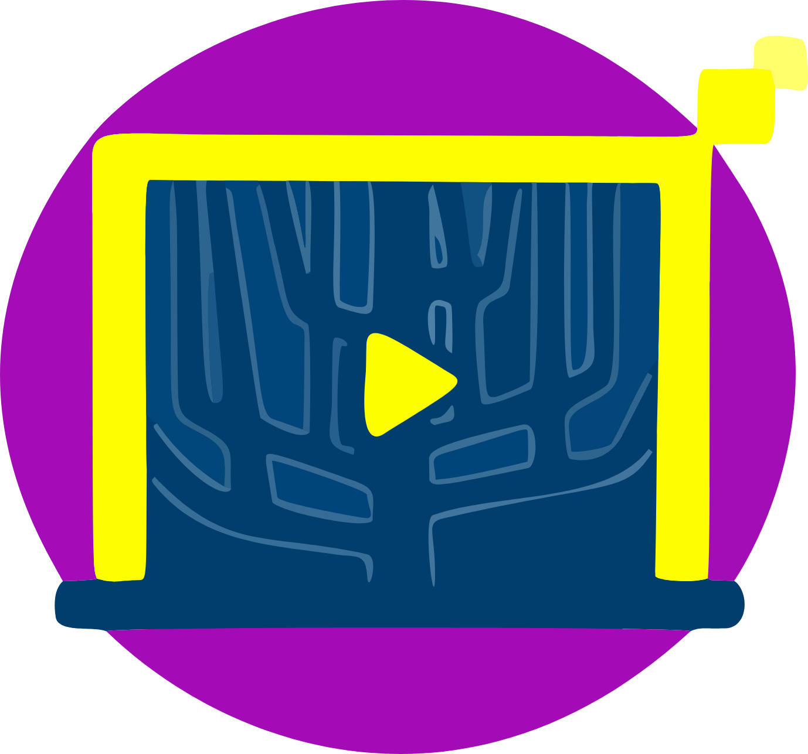
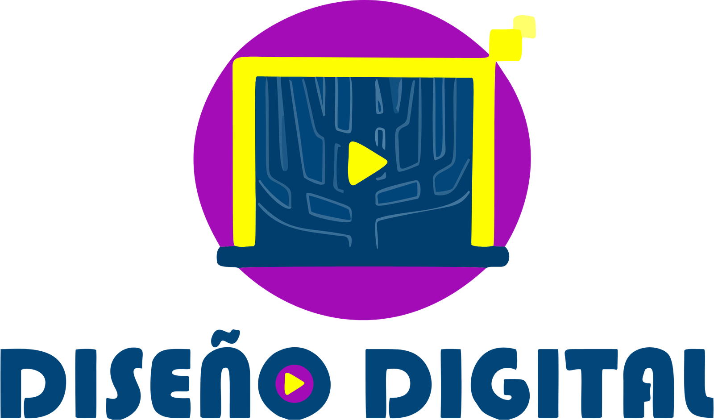
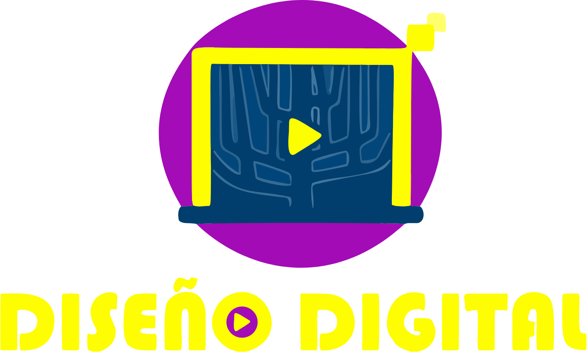
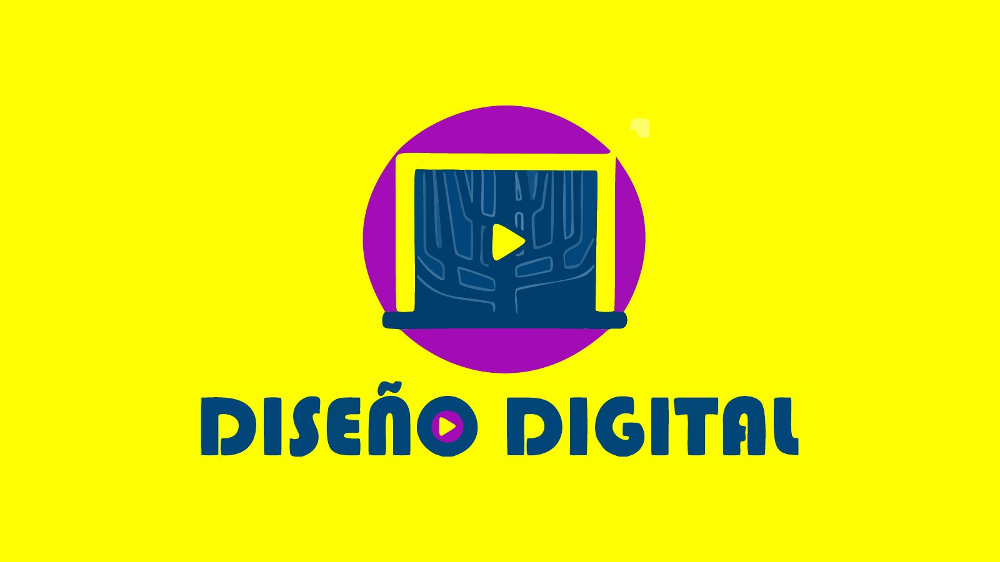
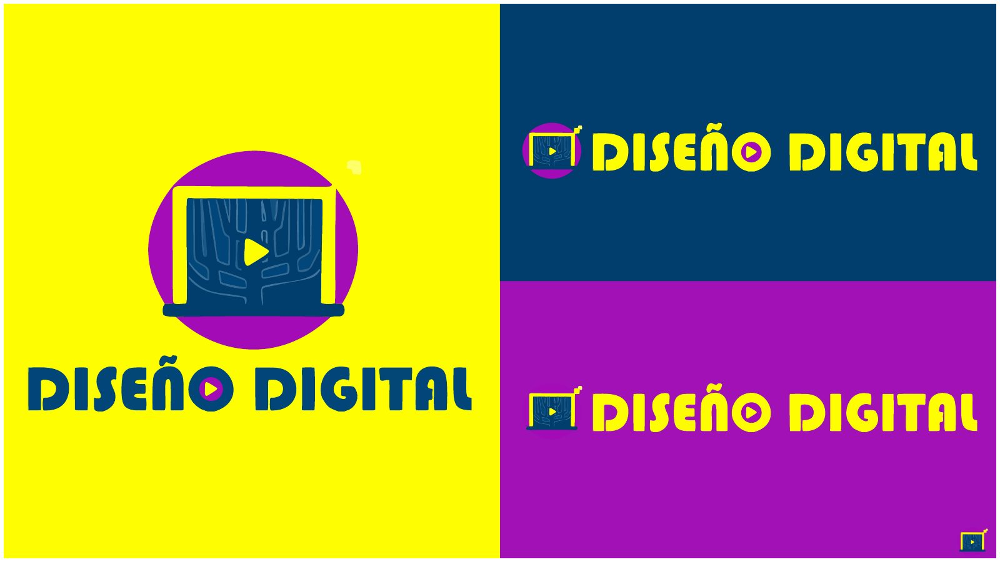
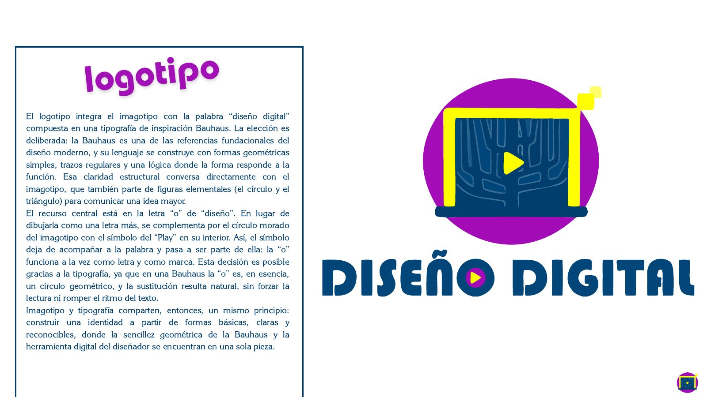
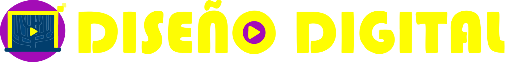

La casa
Universidad Sergio Arboleda: el azul y el amarillo que cualquiera reconoce.

Nueva imagen / Diseño Digital ← Tercer corte Manual (PDF)Tercer corte / Diseño de la imagen corporativa del programa

Creamos una identidad propia para nuestro programa de Diseño Digital de la Universidad Sergio Arboleda, dentro de la escuela COM+ID. Esta es la exposición de cómo la construimos.
01 / La necesidad
Nuestro programa, Diseño Digital, vive entre dos sistemas visuales ya consolidados: el de la Universidad Sergio Arboleda y el de COM+ID, la Escuela de Comunicación e Industrias Digitales.
Lo que no tenía era una identidad corporativa propia y diferenciada. Por eso construimos una que representa su naturaleza, su personalidad y su enfoque creativo, y que dialoga con ese entorno institucional sin limitarse a reproducirlo.

Universidad Sergio Arboleda: el azul y el amarillo que cualquiera reconoce.

COM+ID, Escuela de Comunicación e Industrias Digitales.

La identidad que construimos.
02 / El concepto creativo
Nació de reinterpretar el emblemático estilo sergista. Toca cada paso y mira qué parte del símbolo explica.
03 / El logotipo
Nuestro logotipo integra el imagotipo con la palabra «diseño digital» en una tipografía de inspiración Bauhaus: una referencia fundacional del diseño moderno, con formas geométricas simples, trazos regulares y una lógica donde la forma responde a la función.
Imagotipo y tipografía comparten el principio con el que construimos nuestra identidad: formas básicas, claras y reconocibles.
Demostración gráfica: toca la «o». En una Bauhaus ya es un círculo perfecto, y por eso el círculo morado con el play ocupa su lugar sin forzar nada.
Ilustración didáctica que creamos para esta exposición; el logotipo oficial es el de arriba.04 / Versiones
En nuestro manual definimos versiones vertical y horizontal, y su comportamiento sobre amarillo, azul y morado. Cambia el fondo y mira cómo responde.



05 / Construcción gráfica
Es el espacio libre que le dejamos al imagotipo y al logotipo para que respiren: dentro de esa zona no entra ningún texto, imagen ni elemento gráfico. La medida es 1x, el ancho del triángulo del play del imagotipo, y la repetimos como margen en las tres versiones.
Imagotipo: 9x × 8x. Imagotipo con texto abajo: 17x × 10x. Versión horizontal: 16x × 2x. Usamos el propio símbolo como regla para mantener todo proporcionado, sin importar el tamaño de reproducción.
06 / Paleta
Cuatro colores, cada uno con su papel. Toca uno para copiar su HEX.
Son los colores de la Sergio, que conservamos para que la identidad se sienta de la casa, pero con la misma vuelta que le dimos al imagotipo: el amarillo toma más protagonismo y el azul queda como el color que ordena, el de los textos y la información. El azul da seriedad y representa la parte técnica y estructurada; el amarillo es luz y energía. Juntos, el contraste es máximo.
El morado es el único color que no viene de la Sergio: rompe con lo de siempre, comparte frialdad con el azul y frente al amarillo vibra y crea tensión. En el logo conduce el contenido céntrico: cada vez que aparece, algo se está activando. El blanco deja respirar para que cada color brille sin pelearse.
La tensión del morado entre el amarillo y el azul (ilustración).
07 / Tipografías
ABCDEFGHIJKLMNÑOPQRSTUVWXYZ abcdefghijklmnñopqrstuvwxyz 0123456789 ¡!¿?@#$%&*()-+=/.,:;«»
Es donde más nos esmeramos: tomamos distancia de lo institucional para decir algo propio. Su lenguaje parte de círculos, triángulos y trazos limpios, lo mismo que sostiene nuestro imagotipo.
ABCDEFGHIJKLMNÑOPQRSTUVWXYZ abcdefghijklmnñopqrstuvwxyz 0123456789 ¡!¿?@#$%&*()-+=/.,:;«»
Escogimos Korinna Bold, la misma que usa la Sergio: un hilo más que nos conecta con la universidad y una letra de buena presencia que se lee con comodidad en textos largos.
La Korinna entra después, con calma, a explicar y dar los detalles: así la información llega sin esfuerzo.
08 / Lenguaje gráfico y aplicaciones
Círculo, triángulo, píxel y trama de árbol: convertimos las formas del imagotipo en recursos para ambientar esta exposición.
Estos recursos y las aplicaciones de abajo son complementos ilustrativos que creamos para esta exposición; el manual oficial es el PDF. Usamos los logotipos sin alterarlos.

09 / Coherencia institucional
Nuestra identidad convive con la Sergio y con COM+ID separada por un filete vertical, sin competir con ellas.
10 / Láminas del manual
Las páginas originales del documento. Haz clic para ampliar y navega con las flechas del teclado.
11 / Cómo se lee nuestro proyecto
Alineación con la naturaleza, personalidad y representación del programa, y relación visual con la Universidad Sergio Arboleda y COM+ID.
Una propuesta auténtica y diferenciada, respaldada por un concepto creativo propio: qué la hace particular y por qué es pertinente.
Formas simples, ideas grandes: el momento de dar play al diseño.